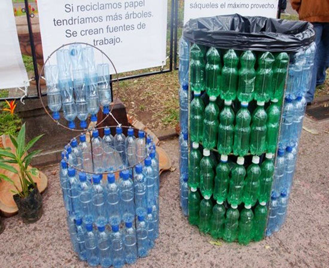

Portal del Centro de Bachillerato Tecnológico Industrial y de Servicios Numero.243


Portal del Centro de Bachillerato Tecnológico Industrial y de Servicios Numero.243
Mtro. Esdras Mejia Ramirez.
Director de Coordanicion de Proyectos
Mtro. Jhony Jordan Roblero Galindo. Presidente de ALIDET
Mtro. Maugro Joseim Gomez Roblero. Evaluador 1 de Proyectos Locales
Mtra. Ingrd V. Ordaz Paxtor. Evaluador 2 de Proyectos Locales
Mtro. Luis David Farrera Ruiz. Coordinador de Proyectos Locales
Proyectos Locales

MISION

La idea de crear y gestionar hortalizas organicas se origino sobre la concientizacion de el uso excesivo
de aplicación de químicos en las hortalizas, mediante grupos de alumnos experimentan y
demuestran como se puede producir el mismo producto usando abonos organicos, esto es una
practica que va de la mano con el medion ambiente, ademas sirve como integracion y regularizacion
en aquellos alumnos de rezago escolar.
Proyectos de Reciclaje

En nustro país cada vez generamos mas basura sin darnos cuenta que muchos de las materias
podemos utilizarlos nuevamente para un uso comun en nuestro entorno. Con estos
proyectos se pretende que el alumno y el docente se de cuenta sobre las diferentes manualidades u
objetos que se pueden hacer y que la utilizamos en la vida diaria, mediante equipos de trabajo
cada uno presenta dierentes propuestas que se pueden hacer con materiales reciclados.
Proyectos tecnológicos
Un proyecto tecnologico es una secuencia de tareas o actividades relacionadas entre si, que tiene
como objetivo la creacion de un producto o servicio que brinde una solucion para lo que se diseña
sea efectivo. Debe resolver el problema mejor que otra propuesta con la misma funcion. El resultado
final es un modelo o prototipo a escala. Se debe tener presente que, cuando hablamos de tecnologias no
nos referimos a las nuevas si no a las mas apropiadas.